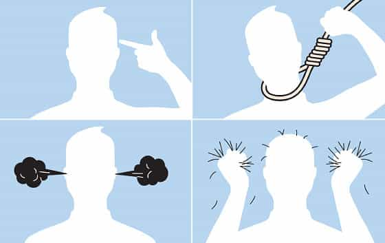

is an aspiring philosopher king, living the dream, travelling the world, hoarding FRNs and ignoring Americunts. He is a European at heart, lover of Latinas, and currently residing in the USA.


The Matrix gave us the analogy of the red pill of truth versus the blue pill of lies. The purple pill describes those who have begun to open their eyes to the truth but don’t want to fully believe all of it.
There is no middle ground. There is truth and reality, and then there is the made up world that society presents. For those still stuck in between, here are some warning signs you are stuck in purple pill territory.
If the constant lying, manipulation, failing to report important stories, and distorting others that regularly goes on in the media wasn’t enough, the meetup outrage should have been enough to make you completely shut out mainstream media from your life. Alternative media, the foreign press, and online sources are, for now, the best replacements. If you still watch the news, you’re just not getting the truth.
That’s what THEY want you to think.
Thanks to alimony and child support laws going full retard, a man can be on the hook for tens if not hundreds of thousands of dollars after a mere one night stand if the woman is able to capture some of his semen and impregnate yourself. If you believe that modern women are not dirty enough to reach into the garbage can, pull out a used condom, and stick it inside them, you are taking the purple pill.
This happens often enough with celebrities where it makes mainstream news (most recently Olympian skier Bode Miller’s ex-girlfriend supposedly impregnated herself this way), but the phenomenon has gone mainstream. If a woman is ready for a child, there is really no downside to this scenario.
Worst case she is unable to shake someone down for money, and collects extra welfare, housing, food stamp, and medical benefits by having a kid as a single mom, and best case scenario, her target is wealthy enough that she can shake him down for thousands a month in payments for a single night of fun. It’s a win-win for her, so don’t think women won’t shove garbage inside their holes for the big payoff.
Bristol Palin, single mother and abstinence advocate!
OK, maybe you’re aware that around 70% of divorces are initiated by women, that obesity is a huge problem, that game is a necessary component of successfully dating in 2016, and you’re aware that society is training toddlers to become trannies. But if you don’t immediately discount every thing that comes out of the mouth of the girl you are gaming, you’re purple pill (at best). Always, always always look at her actions, and ignore her speech.
This past weekend, I met a Chinese student who had just graduated college in the states. She said she hadn’t been in a relationship for over a year, and only had two real boyfriends since coming to the U.S. as a teenager. She told me her friends are pushing her to find someone, but she doesn’t date because she “doesn’t want to be with a guy who’s only looking for fun” and wants something serious. For a moment, I believed her. After all, she was raised in a traditional Asian household, was not a party girl, and stayed out of mainstream American life, socializing mostly with other Asians (her English was broken and bad, even after living here for 6 years).
Two hours later, as I’m banging her in her shower, I reflected on how this was only happening because I completely ignored everything that came out of her mouth and proceeded gaming her. Purple pill Max would have taken her at her word, been friendzoned, and given up, hoping for an easier target. But this experience reinforced how everywhere and always, one must ignore a female’s words and observe only her actions.
OJ Simpson reportedly forced himself on 18 year old Nicole Brown on their first date.
In 2016, the proper way to demonstrate to your date that you enjoy spending time with her is not by giving her a small kiss as you part ways, but instead to violently choke, slap, spit on, and say demeaning things to her as you pound away at her genitals. This is the proper first date behavior in most cases, if you wish to see the young woman again.
I have only recently discovered this truth, and experimented last weekend with said Chinese student. Every violent and aggressive act I initiated was welcomed and encouraged. I took advantage of the Father’s Day holiday by instructing her to say filthy things about what her “daddy” was doing to her (daddy being a stranger she did not know several hours earlier), and she happily obliged. Sadly, I do not yet possess the masochism to spit on or port-o-potty a stranger, but we are moving in that direction, and I feel I must learn this skill in order to remain competitive in the dating market.

Sure, maybe you are a regular. Maybe you follow ROK, have game, and are on the path to an independent self-actualized future. But you still have a Facebook account, log on, waste time, get bombarded by ads and spied on. Facebook is a censoring, propagandizing, tranny-promoting degenerate corporate marketing firm where YOU are the product. Your actions, web histories, movements, friends, and activities are all tracked, monitored, and sold to the highest bidder. And remember, Facebook invented 69 genders. You already spend too much time in front of the screen, so drop Facebook now.
In the words of Steven Colbert, we’re at war with feminists—pick a side. You can’t believe “most” of the truth, but still hold out for a special snowflake. You can’t behave as your parents or grandparents did, even with conservative or virginal women. You will get nowhere, and be friendzoned immediately. You have two choices: go full beta, wife up your nearest landwhale, pull out the credit cards, and be ready to work the rest of your life as a sexless debt-slave in a cubicle filling out TPS reports, or fully accept the red pill, as bitter as it may be. The choice is yours.
Read More: 11 Hard Truths I Learned From Taking The Red Pill